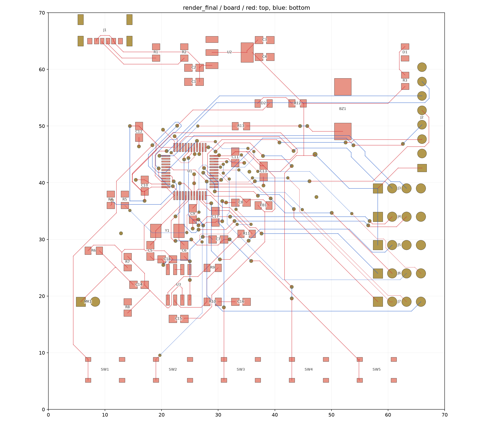

PCB资料：对应现有样板的原生产档
以下原件包含已确认的SW1～SW5按键触点接法错误，没有在本次正式软件发布中修订。不可照原样直接复产。 先读当前样板与硬件勘误。
| 文件 | 是什么 | 用什么打开 |
|---|---|---|
| EDA源工程 | 原理图与PCB编辑工程 | 立创EDA专业版，导入本地工程 |
| Gerber压缩包 | 原设计铜层、阻焊、丝印、钻孔等制造信息 | Gerber查看器或DFM工具，先检查勘误 |
| BOM | 器件清单，说明买什么、焊什么 | 表格软件，UTF-8文本 |
| SMT坐标 | 元件位置、角度、面别，供贴片机使用 | 表格软件/贴片下单工具 |
| PCB全图 | 设计阶段布局预览 | 浏览器/图片查看器 |


Gerber是原设计导出，不能等同于后续订单中工厂修改过的生产稿。项目里没有获得完整工厂加工稿的可核验副本，不能替它作一致性保证。
完整原始工作记录、DRC/DFM检查、复位诊断、布线脚本和JSON证据保留于原始PCB工作目录。这里面的旧“可打样”结论应结合后来发现的按键错误阅读，当前判断以本目录说明与硬件勘误为准。
准备新一版硬件时，先在EDA源工程中正确划分开关内部常通触点，再同步PCB、重布相关网络并重新做电气与制造检查。修改源工程之后必须重新导出Gerber、BOM与坐标，不能继续使用本包旧制造文件。